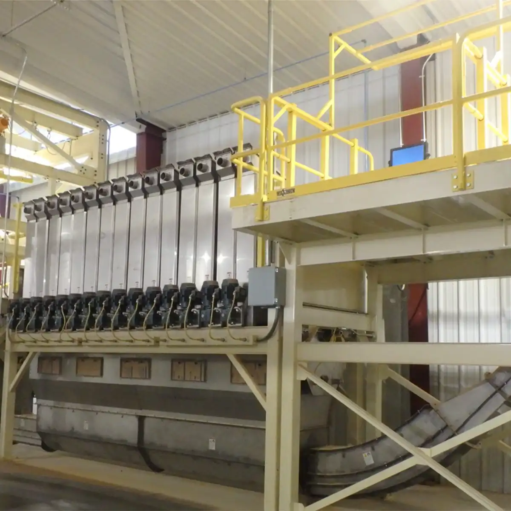
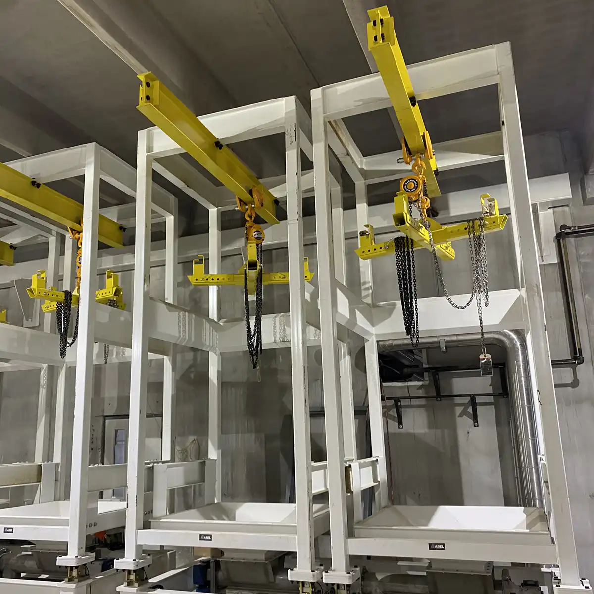
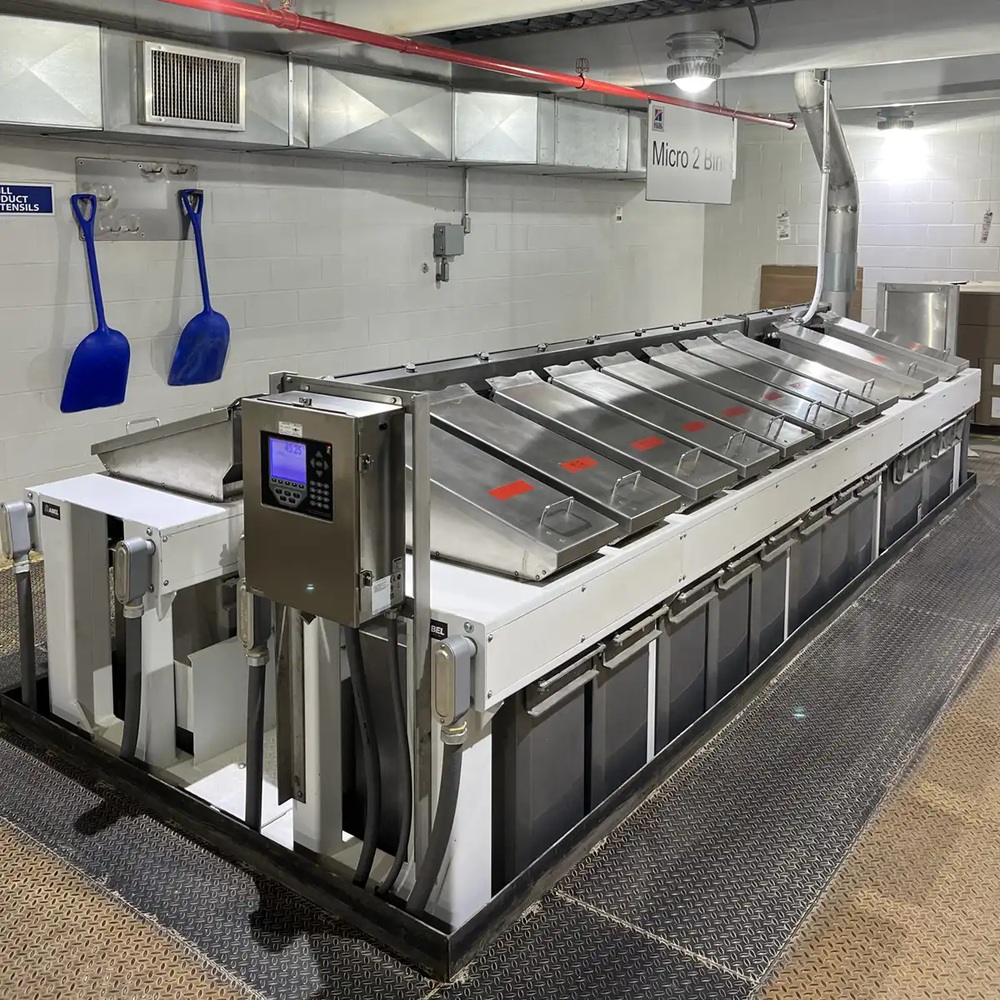

-

Animal Feed
Precision-engineered systems for the unique needs of animal feed production.
-

Grain
Designed for the rigorous demands of large-scale grain handling operations.
-

Food Processing
Ensuring exact ingredient management with pinpoint accuracy.
-

Pet Food
Custom solutions for the specialized requirements of pet food manufacturing.
-

Plastics
For meticulous material handling, offering unparalleled precision and efficiency.


